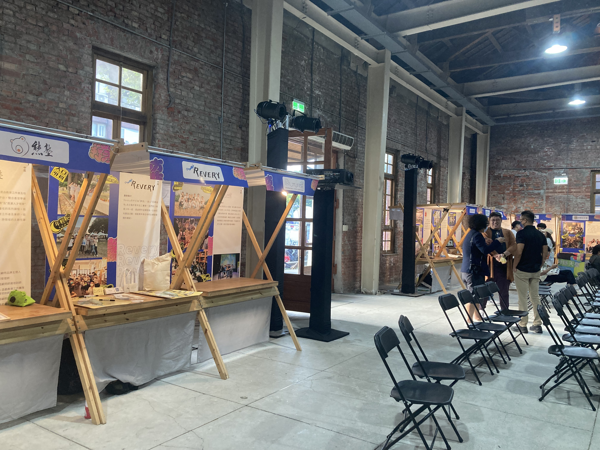

【記者黃家安台北報導】雜學校1日在華山一九一四文創園區舉辦《普列斯製造計畫成果展》，邀請全台25個地方創生團隊進行成果分享。其中，參展團隊「海波浪 seabelongings」從環境角度推動地方創生，透過出版龜山島地方誌、設計以大航海時代為背景的桌遊和攝影作品等方式，期望讓一般民眾瞭解海洋議題。

《普列斯製造計畫成果展》於華山文創園區舉行。 圖/黃家安攝
「父親他們以前都居住在龜山島上，所以成長過程中有許多海的經驗，長大之後突然間想說要做什麼事情的時候，就覺得海好像是我能夠掌握的。」海波浪團隊成員黃建圖表示，因為自己在漁村的成長經歷和家族的歷史，使得他對龜山島和海特別關注。他認為台灣擁有豐富的海洋資源，包括漁業、觀光，和歷史文化資源，可以讓人們放鬆身心，以及向自然學習。但隨著都市化發展興盛，使得人們離海洋越來越遠，也漸漸對海洋感到陌生。因此，他期望透過介紹海洋的自然美景，及有趣的歷史文化，引起大眾對海的好奇，進而拉近人們和海洋議題的距離。
海波浪團隊成員黃建圖(左)和75LAB團隊成員李一品(右)合影。 圖/黃家安攝
海波浪在宜蘭當地推動地方創生長達六年，整理許多龜山島的歷史文物，並整理成地方誌，一併展於龜山島漁村文化館，供民眾參觀，幫助保存龜山島的歷史記憶。即便保存在地的歷史文化看似與人口外移、城鄉差距等議題並無直接關係，但黃建圖認為，宜蘭漁村特別的人文景觀能吸引一般民眾的好奇，若能讓大眾進一步從好奇中產生嚮往，自然能吸引更多人移居漁村，逆轉人口外移的問題。他舉例，近年就有一群來自都市的家長深受宜蘭慢節奏的環境吸引，進而將孩子送到注重自然教育的學校就讀，成為來自都市的教育移民。
海波浪團隊出版的刊物、明信片、桌遊、書籤。 圖/黃家安攝
「海好像是圍牆把我們圍在裡面，所以海對我來講不只是環境議題，反而是整個文化的問題。」雜學校校長蘇仰志認為，台灣四面環海，有助於培養國人向外探索的勇氣，可惜多數台灣人因害怕海洋，而缺乏相應的精神。蘇仰志認為，海波浪結合環境和文化，將海重新帶入民眾的生活，也同時培養關懷環境和有能力解決社會問題的人才。
雜學校校長蘇仰志與海波浪攤位合影。 圖/黃家安攝
海波浪團隊長期在地深耕，因而保存龜山島上特別的歷史。對此，觀展者葉小姐深受感動，他也表示日後會持續關注地方創生議題。蘇仰志說明，一般民眾可以從家鄉思考地方創生的意義，「你在哪裡出生？你到底瞭不瞭解你的家？」他認為每個人都應找到這項問題的答案，因為若人不知道自己來自哪裡，就會失去重要的身分認同。他也指出，海波浪正是從關心自己的家鄉出發，一步一腳印，試圖透過地方創生解決宜蘭漁村所面臨的難題。